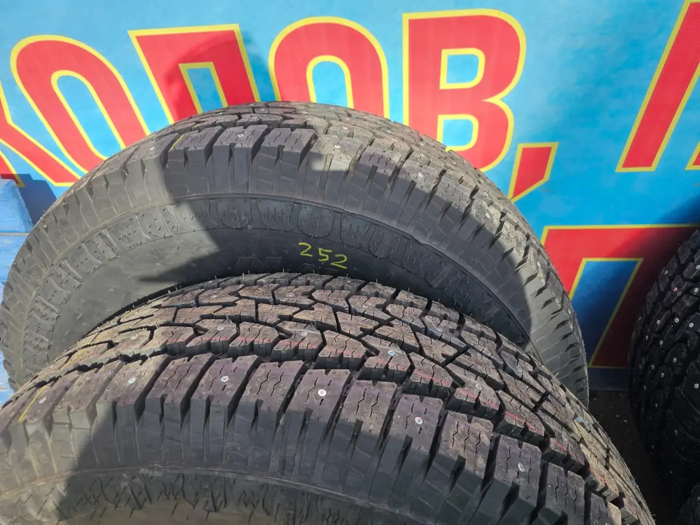

Переобувка по записи на Зверева
Клиенты пишут про запись по времени. Ещё ремонт порезов, мотошиномонтаж, ошиповка и хранение шин.
+7 951 633-26-26Сколько стоит

4,9
Очень удобно наличие предварительной записи. Записался приехал ко времени. Всё сделали очень быстро и качественно. Приемлемые цены. Рекомендую!
Андрей
Прекрасно работает персонал, грамотно и быстро! Переобули машину за 35 минут, спасибо!
Олег
Быстро и качественно сделали работу. Запись по времени. Спасибо!
Дмитрий
- Ежедневно
- 10:00–20:00
Что спрашивают у стойки
Можно записаться заранее?
Да, на сайте или по телефону.
Храните шины?
Да, есть сезонное хранение. От 3 000 ₽ за сезон.
Как можно оплатить?
Наличными, по счёту, переводом или по QR-коду.